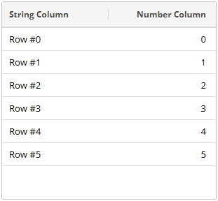

Eclipse Scout Release Notes
| This document is referring to an upcoming Scout release. Please click here for the current version. |
About This Release
The latest version of this release is: 26.2.0-beta.1.
You can see the detailed change log on GitHub.
Coming from an older Scout version? Check out the Migration Guide for instructions on how to obtain the new version and upgrade existing applications.
Stateless Backend Server
The Scout backend server was migrated into a stateless architecture without requiring an HTTP- and Scout server session any longer. In a cloud environment a backend server now supports dynamic horizontal scaling which increases fault tolerance, improves overall reliability and adds flexibility for updates and deployments in a high availability setup.
During a transition period, session support will be provided in separate modules for legacy purposes, see migration guide for details.
Tree: FindNode Added and VisitNodes Improved (Scout JS)
Finding tree nodes may be helpful especially for outlines to find a specific page.
This can now be done using the new function Tree.findNode() that either takes a predicate or a subclass of TreeNode as argument.
The function uses the existing visitNodes function to search for the tree node.
Unfortunately, that function does not have the possibility to abort the traversal at any point.
To support this, it now uses the TreeVisitResult, so you can now either skip visiting a subtree or stop visiting completely.
To make it consistent with other visitor functions like Widget.visitChildren, returning true now stops visiting completely instead of just skipping the subtree.
This means you need to check your visitors according to the Migration Guide.
Table: Column Formatter Added (Scout JS)
The Column now has a formatter property similar to the one of the ValueField.
This makes it possible to change the format function without having to subclass the column.
Value Field: Async Validator Support Added (Scout JS)
A validator can now be asynchronous by returning a promise. This can for example be used to call a rest resource that validates the user input.
Please see the Technical Guide for details.
HybridManager API improvements (Scout JS)
The HybridManager provides API to dispose formerly created widgets. The widgets passed to HybridManager.disposeWidgets are collected and disposed in a single hybrid action.
HybridManager.get().disposeWidgets(widgets);Tab Box: Mark Strategy Added (Scout JS)
The Scout JS TabBox now supports marking the tab items that have content or need to be saved, like the Scout Classic TabBox already does.
A marked tab item has a slightly darker line below its tab.
You can choose between two strategies:
-
NOT_EMPTY: Marks a tab item if it is not empty. -
SAVE_NEEDED: Marks a tab item if it needs to be saved.
The default strategy is NOT_EMPTY.
For tab boxes inside a Search Form it is SAVE_NEEDED.
FormField: Empty Property now Reflects the State of its Children (Scout JS)
FormField.empty is now computed based on the empty state of its child fields and not only considers the empty state of the field itself.
This is useful for composite fields that don’t have its own empty state like GroupBox.
ValueField s are not affected because they still only consider their own empty state, so they are empty if they don’t have a value.
To influence or disable the computation of the empty property, you can set the property checkEmpty or override the method _computeEmpty().
Please see the JsDoc of the FormFieldModel.checkEmpty for details.
Locking of Transitive Node Dependencies
To mitigate supply chain attacks and ensure reproducible builds, Scout now provides support to lock the Node.js dependencies.
See the Technical Guide for details and the Migration Guide for instructions how to enable the feature.
abortableContext (Scout JS)
When working with rest requests often there is the need to abort previously created requests again.
As typically all requests made using Scout JS are created using ajax the developer does not have access to the abortable call and therefore, is unable to use e.g. an AbortController to abort these calls.
To address this issue the abortableContext was introduced. It allows code to be executed within the scope of an AbortController.
All abortable elements that are registered while this context is present may than be aborted using the AbortController.
In addition, all calls created using the ajax utility auto register themselves in the current context if there is one.
protected async _loadFooAndBarAbortable(id: string | number, abortController: AbortController): Promise<{ foo: object, bar: object }> {
return await abortableContext.runInContext(
() => this._loadFooAndBar(id),
abortController
);
}
protected async _loadFooAndBar(id: string | number): Promise<{ foo: object, bar: object }> {
// if run inside an abortableContext the ajax calls are auto registered
const fooPromise = ajax.getDataObject(`api/foo/${id}`);
const barPromise = ajax.getDataObject(`api/bar/${id}`);
return {
foo: await fooPromise,
bar: await barPromise
};
}Other abortables can be registered in the current context using abortableContext.registerAbortableInCurrentContext(abortable).
If one creates a new abortable context while running inside another abortable context, the inner context is registered in the outer one to ensure that the inner context is aborted when the outer context is aborted.
const outerController = new AbortController();
abortableContext.runInContext(
() => {
const innerController = new AbortController();
abortableContext.runInContext(
() => {
const innerAbortable = new MyAbortable();
abortableContext.registerAbortableInCurrentContext(innerAbortable);
},
innerController
);
},
outerController
);
// aborts the innerController and therefore the innerAbortable as well
outerController.abort();PageWithTable: abortable loading (Scout JS)
The PageWithTable now supports abortable loading. To support this, PageWithTable runs _loadTableData(searchFilter) within an abortable context.
For a typical implementation where data is loaded via rest, the call is registered automatically.
protected override _loadTableData(searchFilter: any): JQuery.Promise<any> {
return ajax.postDataObject('api/foo/list', this._withMaxRowCountContribution(searchFilter));
}As only synchronously created calls are registered automatically, implementations that make several calls subsequently must create new abortable contexts for each asynchronously created rest call to ensure all calls are aborted correctly.
If this is not done, the PageWithTable will still behave correctly, i.e. will not show resulting data when loading was aborted.
So creating a new abortable context for a subsequent call is not necessary for the user experience but prevents unnecessary calls being made.
To create such a new abortable context all implementations of PageWithTable can use the protected member _abortController.
protected override _loadTableData(searchFilter: any): JQuery.Promise<any> {
return $.when(this._loadTableDataAsync(searchFilter));
}
protected async _loadTableDataAsync(searchFilter: any): Promise<any> {
const abortController = this._abortController;
const searchRestrictions = await ajax.postDataObject('search-api/util/build-search-restrictions', this._withMaxRowCountContribution(searchFilter));
const foos = await abortableContext.runInContext(
() => ajax.postDataObject('api/foo/list', {searchRestrictions}),
abortController
);
return foos;
}dataObjectVisitors (Scout JS)
A utility to visit data objects in Scout JS was added. dataObjectVisitors can be used to recursively visit any object and e.g. execute a callback for all occurrences of an explicit BaseDoEntity.
BarDo in the given FooDo.dataObjectVisitors.forEachRec(
fooDo,
c => c instanceof BarDo,
barDo => console.log(dataObjects.stringify(barDo))
);Drag & Drop for Table Rows
The Table widget can now let users move a row to a different position by simply dragging it with the mouse.

Detailed information on how to use this in your own application can be found in the Technical Guide.